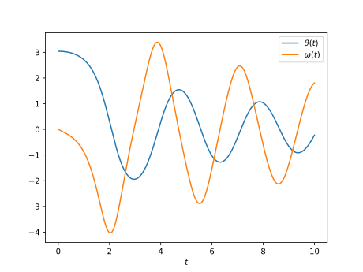

Reto de métodos numéricos: Día 17
Durante octubre (2017) estaré escribiendo un programa por día para algunos métodos numéricos famosos en Python y Julia. Esto está pensado como un ejercicio, no esperen que el código sea lo suficientemente bueno para usarse en la "vida real". Además, también debo mencionar que casi que no tengo experiencia con Julia, así que probablemente no escriba un Julia idiomático y se parezca más a Python.
Método de Euler
Hoy tenemos el método de Euler. Que es el método de Runge-Kutta, más simple y lleva su nombre por Leonhard Euler que lo usó en el siglo 18.
El método consiste en realizar actualizacion de la función usando el valor de la pendiente con la fórmula
A continuación se presentan los códigos.
Python
from __future__ import division, print_function import numpy as np import matplotlib.pyplot as plt def euler(dydt, y0, t, args=()): ndof = len(y0) ntimes = len(t) y = np.zeros((ndof, ntimes)) y[:, 0] = y0 for cont in range(1, ntimes): h = t[cont] - t[cont - 1] y[:, cont] = y[:, cont - 1] + h*dydt(y[:, cont - 1], t[cont], *args) return y def pend(y, t, b, c): theta, omega = y dydt = [omega, -b*omega - c*np.sin(theta)] return np.array(dydt) b = 0.25 c = 5.0 y0 = [np.pi - 0.1, 0.0] t = np.linspace(0, 10, 10001) y = euler(pend, y0, t, args=(b, c)) plt.plot(t, y[0, :]) plt.plot(t, y[1, :]) plt.xlabel(r"$t$") plt.legend([r"$\theta(t)$", r"$\omega(t)$"]) plt.show()
Julia
using PyPlot function euler(dydt, y0, t; args=()) ndof = length(y0) ntimes = length(t) y = zeros(ndof, ntimes) y[:, 1] = y0 for cont = 2:ntimes h = t[cont] - t[cont - 1] y[:, cont] = y[:, cont - 1] + h*dydt(y[:, cont - 1], t[cont], args...) end return y end function pend(y, t, b, c) theta, omega = y dydt = [omega, -b*omega - c*sin(theta)] return dydt end b = 0.25 c = 5.0 y0 = [pi - 0.1, 0.0] t = linspace(0, 10, 1001) y = euler(pend, y0, t, args=(b, c)) plot(t, y[1, :]) plot(t, y[2, :]) xlabel(L"$t$") legend([L"$\theta(t)$", L"$\omega(t)$"]) show()
En ambos casos el resultado es la siguiente gráfica
Comparación Python/Julia
Respecto al número de líneas tenemos: 32 en Python y 33 en Julia. La comparación
en tiempo de ejecución se realizó con el comando mágico de IPython %timeit
y con @benchmark en Julia.
Para Python:
%timeit euler(pend, y0, t, args=(b, c))
con resultado
100 loops, best of 3: 18.5 ms per loop
Para Julia:
@benchmark euler(pend, y0, t, args=(b, c))
con resultado
BenchmarkTools.Trial: memory estimate: 648.33 KiB allocs estimate: 15473 -------------- minimum time: 366.236 μs (0.00% GC) median time: 399.615 μs (0.00% GC) mean time: 486.364 μs (16.96% GC) maximum time: 4.613 ms (80.26% GC) -------------- samples: 10000 evals/sample: 1
En este caso, podemos decir que el código de Python es alrededor de 40 veces más lento que el de Julia.
Comentarios
Comments powered by Disqus